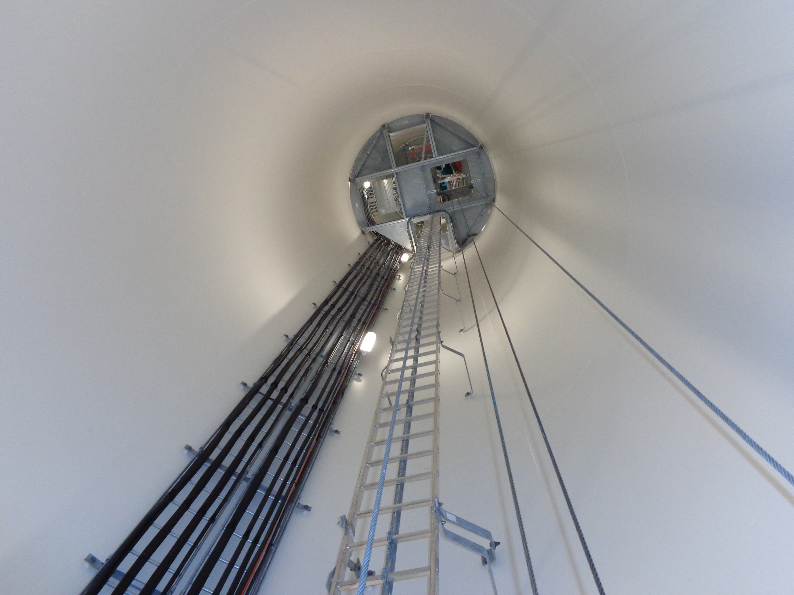
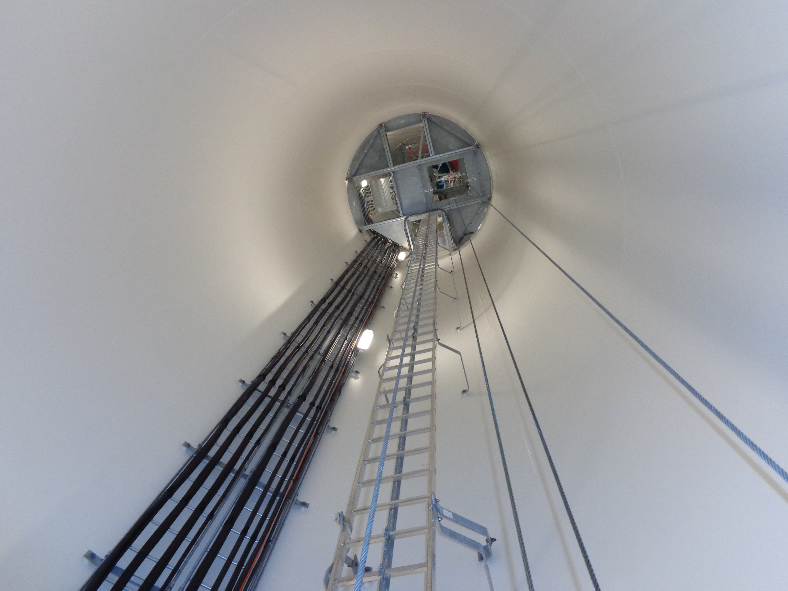

Unser Leistungsangebot an Hersteller für die Wartung von Windanlagen aller Bauarten:
Wartung
Wir erfüllen Punkt für Punkt den Servicevertrag, den Sie mit dem Windkraftbetreiber beim Verkauf Ihrer Anlage geschlossen haben: In den vereinbarten Zyklen (6–12 Monate) checken wir jede Schraube vor Ort und pflegen die belasteten Teile.
 



Instandhaltung
Bei Bedarf übernehmen wir auch kleinere Reparaturen und tauschen Verschleißteile aus. Wir lassen uns von Ihnen im Fall leichter Störungen an einer Anlage auch zu deren Behebung beauftragen.
Weiterbildung
Wir garantieren die kontinuierliche Weiterbildung unserer Service-Teams, sowohl was die technischen Neuerungen bei den von Ihnen gebauten Anlagen angeht als auch in Bezug auf aktuelle Normierungen und Zertifizierungen.
Zertifizierungen
- SCC-Standards für Arbeitssicherheit, Gesundheits- und Umweltschutz
- QM-Zertifizierung nach ISO 9001:2008
- Zertifiziert nach Entsorgungsfachbetriebeverordnung
Optional
Über dieses Leistungsangebot hinaus bieten wir den regelmäßigen Wechsel der Hydraulik- und Getriebeöle an der Windkraftanlage an. Besprechen Sie mit uns bei Interesse das Procedere. Es gibt zwei Möglichkeiten: Entweder nehmen wir diesen Service in den Wartungsvertrag mit Ihnen auf oder wir lassen uns für den Ölwechsel direkt vom Windkraftbetreiber beauftragen.